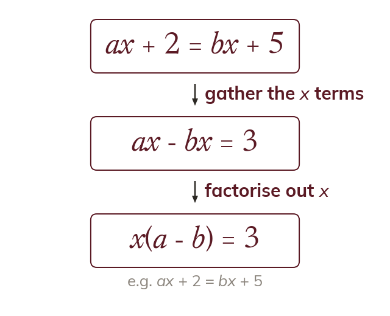

When the subject appears twice
Inverse operations cannot free a letter that appears twice. So its terms are gathered on one side first.
Inverse operations cannot free a letter that appears in two terms, because undoing one term leaves the other. So every term containing the subject is gathered on one side first.